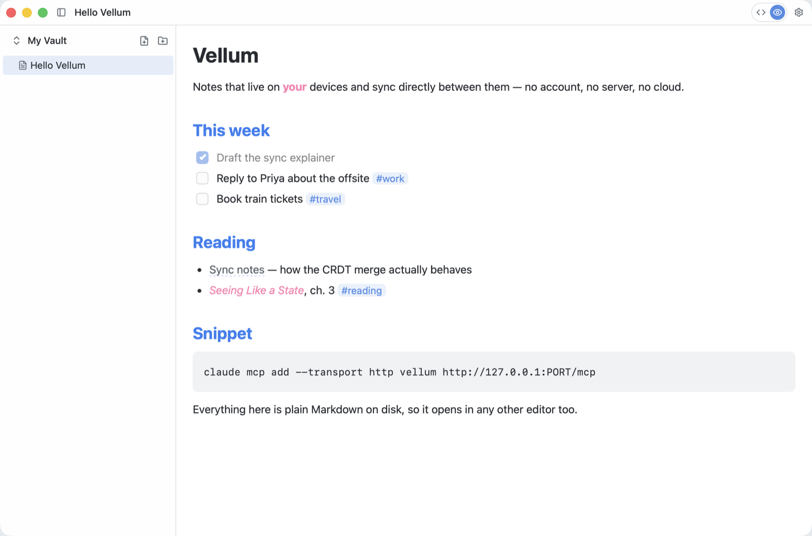
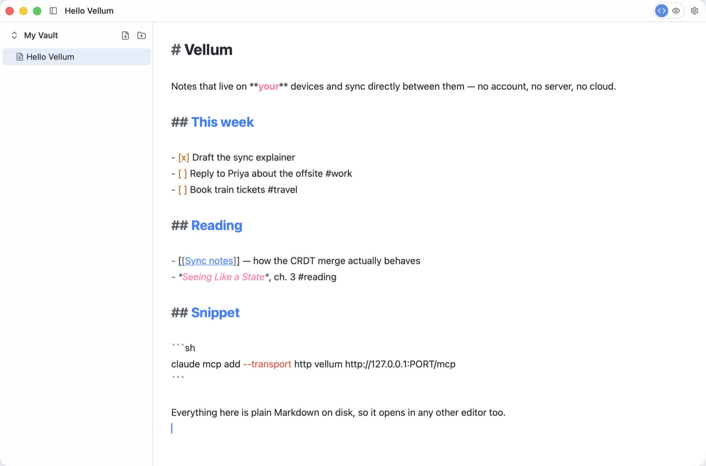

Markdown notes that live on your devices and sync directly between them.
macOS on Apple Silicon · Android APK · free and MIT licensed


Most notes apps put your writing on someone else's computer. Vellum doesn't. Every vault lives on your own devices, and syncing happens directly between them — over the internet or across the same Wi-Fi. There is nothing to sign up for and nothing to host.
Notes are plain Markdown files. If you ever stop using Vellum, you keep everything, in a format every other tool already reads.
Source and preview modes, syntax highlighting, formatting shortcuts, and a formatting toolbar on mobile.
A TODO list that's an actual checklist, and a Journal that opens a new dated section each day. Both are still Markdown underneath.
Search every note in a vault, and write #tags anywhere in your
writing to pull related notes together.
Scan a QR code to share a vault with another device. Edits then flow both ways on their own, and merge cleanly when two devices change the same note.
Eight themes and several fonts, including a Material You theme that follows your wallpaper on Android 12+.
Turn on a local MCP server and let Claude Code — or any MCP client — read and write your notes.
Each vault is an iroh-docs document, and each note is an entry keyed by its path. Sharing a vault produces a write-capability ticket, rendered as a QR code; any device that joins gets equal, full read/write access.
Peers are remembered by a stable node ID and re-dialled through iroh's discovery, so sync survives IP changes, network switches and restarts. There is no central authority — every synced device holds a complete copy.
Vellum can host a local MCP server, bound to this machine only and protected by a token. Turn it on in Settings → Agents, then connect:
claude mcp add --transport http vellum http://127.0.0.1:PORT/mcp \
--header "Authorization: Bearer TOKEN"Desktop builds update themselves. Android updates through Komi Store, or by installing a newer APK over the top.